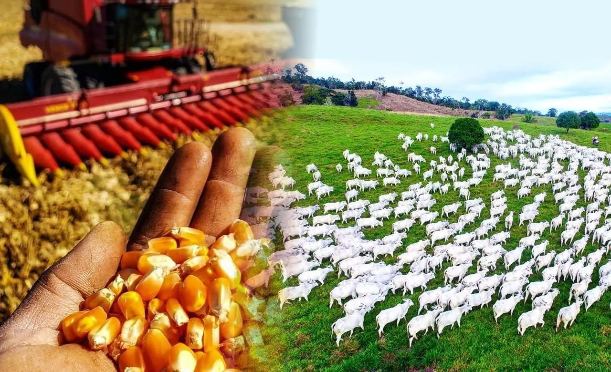

🍽️ Comida
No campo, a alimentação está diretamente ligada à produção local. Muitas famílias cultivam sua própria horta, criam animais e consomem alimentos frescos, como ovos, leite, queijos caseiros, legumes e frutas colhidos no próprio quintal. É comum o uso de ingredientes naturais e receitas tradicionais passadas entre gerações. O acesso a restaurantes é mais limitado, sendo mais frequente o preparo da comida em casa.
👕 Roupas
As roupas no campo geralmente são escolhidas pela praticidade. Pessoas que trabalham na lavoura ou com animais usam botas, chapéus, calças jeans resistentes e camisas de manga comprida para proteção contra o sol, o frio e os riscos do trabalho rural.
🧑🌾 Trabalho
A principal atividade no campo é a agricultura e a pecuária. Muitas pessoas trabalham em plantações de milho, soja, feijão ou cuidam de criações como vacas, galinhas e porcos. Além disso, há também trabalhadores dedicados à agricultura familiar, que vendem seus produtos em feiras ou diretamente a consumidores.
 🧠 Educação e Acesso
Embora existam escolas rurais, muitas vezes os estudantes precisam se deslocar longas distâncias. O acesso à internet e a bibliotecas ainda é limitado em várias regiões, o que pode dificultar o aprendizado. No entanto, há avanços com programas de inclusão digital e ensino à distância.
🎉 Cultura
A vida cultural no campo gira em torno de festas populares, como festas juninas, cavalgadas, rodeios e festas religiosas. São eventos que reúnem a comunidade e reforçam os laços locais.
⚙️ Tecnologia
Embora o campo seja conhecido por práticas tradicionais, a modernização vem crescendo. Máquinas agrícolas modernas, drones e sistemas de irrigação automatizados são cada vez mais comuns, principalmente no agronegócio.